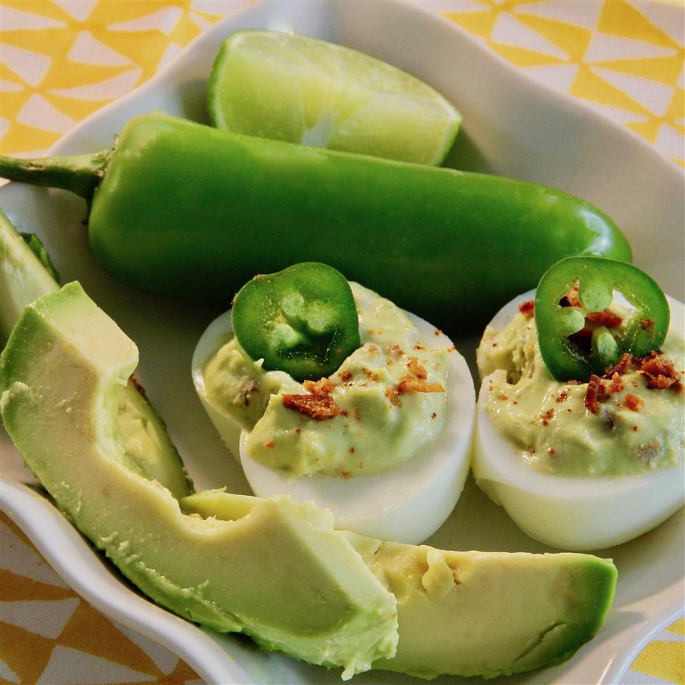

Avocado Deviled Eggs

Description
This is a twist on the traditional deviled egg!
Ingredients
- 6 hard-boiled eggs, peeled and halved
- 1 avocado - peeled, pitted, and diced
- 3 slices cooked turkey bacon, chopped, divided
- 2 ½ tablespoons mayonnaise
- 2 teaspoons lime juice
- 1 clove garlic, crushed
- ⅛ teaspoon cayenne pepper
- sea salt to taste
- 1 jalapeno pepper, sliced (Optional)
- 1 dash hot sauce, or to taste (Optional)
Steps
- Scoop egg yolks into a bowl; add avocado,
2/3 of chopped turkey bacon, mayonnaise,
lime juice, garlic, cayenne pepper, and salt.
Mash egg yolk mixture until filling is evenly combined.
- Place shrimp in a steamer basket and place on top of the pot cover.
Do not submerge shrimp. Remove some water if necessary.
Season the shrimp with Old Bay seasoning.
Back to top